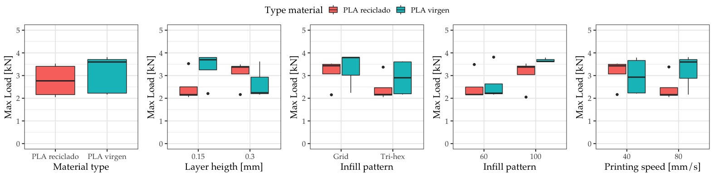

A new article created using the Distill format.
Additive manufacturing (also called 3D printing) is becoming a key technology for a cross domains applications. The layer-by-layer principle enables a higher flexibility degree in the product design phase [ref]. This technology is pushing forward advantages such as customization of objects of complex geometries with a great deal of detail, combination of different materials, no need for assembly and high utilization rate of raw materials [2]. Thus, the technology is receiving great attention by companies and genereal public.
3D printing has developed significantly over time. A great development is expected in sectors such as product consumption, medical products and aerospace components [3]. The rapid prototyping market reached $7.3 billion US dollars in 2018 according to Wohlers (Rodriguez-Hernández et al., 2020), which also forecasts the market to reach 23.9 and 35.6 billion dollars by 2022 and 2024, respectively (Forbes, 2019). The industry has grown from $295 million to 5.1 billion over the past 25 years. Nowadays, there is a need to find paths to reduce the ecological impact that manufacturing processes (including 3D printing technology) have is an important topic addressed by a large number of researchers [ref?]. Research efforts to identify opportunities of 3D printing on the circular economy paradigm start to be explored [4]. Plastic is one of the most used materials in the 3D printing industry, and given their non-biodegradable nature, it is one the most abundant type of waste produced and their impact is well document in the different ecosystems [ref]. Thus, reducing the consumption of plastics and/or the use of the plastics already presented in the ecosystem is of great importance for the environment.
To this purpose, distributed recycling via additive manufacturing (DRAM) methodology make an emphasis in the technical steps to possible reuse plastic waste through the mechanical recycling approach for material extrusion based techniques of 3D printing [6]. In the DRAM methodology, consumers have an economic incentive to recycle because they can use their waste as feedstock for a wide range of consumer products that can be produced for a fraction of conventional costs of equivalent products. Moreover, 3D printing is especially suited because it allows producing parts with almost no waste (Sehdev et al., 2017) and could reduce more than 40 % of the waste related to the used material, reusing 95 % of the unused material [7]. Nevertheless, one of the the systemic problem of plastic waste relies on dependency of the indiscriminate disposal of plastics which carries multiple risks because many plastic products contain additives that modify their physico-mechanical properties difficulting their recycling/reuse [8].
The use of biopolymers of natural and renewable origin promising strategies to alleviate these problems [11]. However, the number of publications is limited when it comes to sustainable manufacturing using 3D printing [3]. Although the technology offers high efficiency in the use of material, the great democratization of this technology could cause a feedback impact due to the increasing generation and disposal of huge amounts of waste or polluting emissions to fabricated virgin feedtock. Currently, most of the cost of 3D printing is associated with the cost of the filament [ref?]. By recycling raw materials such as polylactic acid (PLA), the emissions of carbon dioxide can be reduced in the transport to landfills or shipping to customers offering environmental benefits [ref?]. The technical feasiblity for recycling in laboratory conditions been proved for PLA [12], ABS [13], PET [14] that recycled plastics have a similar performance to their virgin counterparts and they have even been applied in the manufacture of high value products in some sectors such as the automobile [9]. However, studies on the technical acceptability of recycled materials as substitutes for conventional virgin materials are still limited for particular applications …
The present study evaluates the mechanical properties of both conventional and recycled PLA specimens. The objective of the study is the assessment of the suitability of the recycled PLA as replacement to advance to more sustainable 3D printing processes. To do that, the study analyzed the influence of several printing parameters on the mechanical properties of the parts based on a comprehensive experimental program. Then, a printed parts was designed comparing with a virgin to evaluate the acceptability in …
One of the most common processes in 3D printing is the fused deposition modeling (FDM) process. The process is based on material extrusion, so the material is heated above the melting point of the material and then deposited onto a platform [15]. In FDM, a variety of thermoplastic materials are commonly used, such as acrylonitrile butadiene styrene (ABS), polyvinylchloride (PVS), polycarbonate (PC), nylon, polifenilsulfona, high density polyethylene (HDPE), low density polyethylene (LDPE), polyethylene terephthalate (PET), high impact polystyrene (HIPS) and polylactic acid (PLA) [18].
The development of new materials such as polymers, elastomers and composites in engineering plays a fundamental role in the advance sustainable manufacturing [19]. The use of biopolymers of natural and renewable origin, replacing synthetic polymers, is the cellulose, hemicellulose, lignin, starch, alginate, chitosan and derivatives derived from them represent the most abundant bio-based and renewable raw materials for different 3D printing technologies. In addition, these biopolymers of natural origin include lignocellulosic materials, seaweed materials and exoskeleton crustacean materials [11]. [11] reviews a wide range of biobased printing materials with the adequate printing/solidification approach and printed structures and potential applications. Most of them find potential applications in biomedicine such as Cellulose nanofibers (CNF)/alginate and Methylcellulose alginate that have as potential applications cartilage tissue engineering and regenerative therapy, respectively. To print biological matter, new 3D printing methods, such as cryolithography, are appearing. These methods find applications in tissue engineering and food engineering [20].
Polylactic acid is a type of natural biopolymer obtained from crops such as starch or sugar cane. It is a biodegradable biopolymer constituted of lactic acid molecules and it is one of the most used materials in 3D printing. In addition, PLA is a sustainable alternative that shows a range of crystallinity and mechanical properties between polystyrene and polyethylene terephthalate [17].
Recycling (mixing of virgin material with used material) of raw material is a method of special interest to contribute to manufacture in a sustainable way [9]. However, it is important to evaluate the properties of the recycled materials before substituting virgin for recycled materials.
In this sense, [21] compared the elongation at break, load at break, flow index, Young’s module and breaking stress of recycled ABS, high impact polystyrene (HIPS) and PLA. The PLA showed the highest elongation at break along with the ABS. In addition, the PLA had a higher breaking load and breaking stress, although a smaller Young’s modulus. Other authors such as [22] identified the suitability of using recycled polypropylene instead of virgin polypropylene based on mechanical properties. Specifically, they found that the use of fillers (talc and glass fibre) improved the mechanical properties. [23] studied the influence of the percentage of recycled PLA used in the filament (i.e., 10 to 50 %) showing that the smaller the percentage the higher the ultimate tensile strength. [24] obtained higher values of tensile stress for recycled PLA when comparing to the virgin one. [25] presented a paper to evaluate the reusing of waste children’s toys as raw material for 3D printing.
As [26] pointed out, the use of recycled materials is still uncertain because the potential changes in the material properties then recycling. [9] studied the cycles of printing that is able to withstand the PLA until it loses much of its properties. Thus, they showed that PLA withstands two printing cycles, since in a third cycle the mechanical properties and viscosity decreased considerably. The increase in crystallinity and melting enthalpy and the decrease of cold crystallization enthalpy are attributed to the 3D printing process, not to the extrusion recycling process. Table 1 shows the comparison of the properties between the virgin material and the same material subjected to another printing cycle, being possible to appreciate how properties such as the tensile strength and modulus are close for the two materials. Similarly, other authors such as [27] have proved how recycling PLA provides comparable mechanical properties as the virgin material only after a second recycling process.
The recycling of PLA has certain limitations because of reducing molecular weight with its reuse, resulting in degradation and decrease of mechanical properties. For instance, the addition of polidopamine (PDA) on the surface allows improving these properties. Viscosity is also reduced with each printing cycle but, it could be corrected by adding virgin plastic [17]. When recycling, there is a decrease in the properties of the material as a result of the presence of carbonyl groups and superficial pitting due to thermomechanical degradation during the process of new melting process occurring during 3D printing [9].
The mechanical properties of the parts are critical for engineering parts, particularly, for 3D printed parts. Several studies evaluated the mechanical properties of 3D printed parts for various materials; [28] reviewed some of them in their study. The printing conditions used to manufacture the parts have an important role on the obtained results. So, it is important to identify the most important parameters among all of the available to carry out the process that may affect the response variable and their expected influence based on the scientific literature [29]. For instance, [28] determined that the key parameters that influence the mechanical properties in 3D printing are porosity, layer height, filling density, printing direction and part orientation. In addition, for low values of layer height, as well as the thickness of the deposited or printed filament, the tensile strength of the material is improved. In addition, by orienting the printing direction towards the direction in which the tensile load will be applied during tensile strength, the property can be also maximized. The importance of the printing orientation was also identified by [30]. According to [31], a higher extrusion temperature and an optimized layer thickness, a triangular filling pattern and a higher filling level maximize the strength of the parts. Regarding the printing speed, it is identified that higher printing speed with higher layer thickness result in lower part strength.
Among others, [32] also identified the influence of the layer height on the mechanical resistance.
Nevertheless …
The printing materials used in the study were virgin and recycled PLA characterized by data listed in Table S1. Both materials were commercial ones, so the recycling was not done during the research. The recycled PLA contained 10 % of virgin PLA in the blend.
The 3D printer used to manufacture the specimens was a BQ’s Witbox, shown in Fig1a. The software used to generate the printing code was the Ultimaker Cura 3.2.1. To perform the destructive test, the machine used was the MTS Criterion 43 universal testing machine (MTS, 2020) (Fig 1b) with a maximum load of 50 kN, being the maximum load supported by the LPS 104 cell of 10 kN. The clamping system was the Instron 2716-015 system with a maximum supported load of 30 kN. The selected strain rate was 0.5 mm/min.
In order to save material and time to carry out the experimental plan, the geometry of the specimen was reduced in size from the one recommended by the UNE 116005:2012 standard (UNE, 2012), which define the length of the specimen at no less than 120 and 150 mm depending on the orientation. However, in this study the specimens are manufactured according to the dimensions proposed by [33] in which the length of the specimen was 75 mm. The dimensions of the specimen are the ones depicted in Fig. 2.
The aim of the study is identifying the most critical factors affecting the mechanical properties in 3D printing, evaluating their influence on the mechanical properties in 3D printing, particularly for both virgin and recycled PLA. Thus, based on the results, it is expected to gain a better understanding on the suitability of using recycled materials in 3D printing and how to properly select the printing conditions to guarantee sufficient mechanical resistance. In order to do that, an experimental plan comprising three phases will be developed.
Based on the literature research, the critical parameters for the study are the (1) layer height and (2) infill pattern. In addition, taking into account the goal of sustainable manufacturing (i.e., trying to optimize the consumption of material), but also productivity (i.e., trying to minimize printing times), infill density and printing speed were considered [35]. The response variable chosen was the maximum load attained during the testing of the specimen [37].
The experimental plan included three different phases (Figure 2) to carry out a comprehensive study with a limited number of tests not compromising the reliability of the results.
In Phase I, the objective was to identify which were the most important factors that have influence on the response variable. The Phase II allowed studying in more detail the influence of the most influential factors according to phase I. Finally, the Phase III aimed at evaluating the influence of the anisotropy of the specimens depending on the printing orientation, which may notably affect the mechanical resistance of the specimen. Table S2 summarizes the tests of three phases.
In Phase I, the factors analyzed were those identified in previous sections as critical. Thus, layer height, infill pattern, infill density and printing speed were selected using two levels for each of them, with large ranges, especially for the infill density. Thus, the factors and their levels used were: layer height (0.15 and 0.3 mm), infill pattern (tri-hexagonal and grid) , infill density (60 and 100 %) and printing speed (40 and 80 mm/s). The printing temperature chosen was 210 °C, which was the recommended one for these materials.
Fractional designs are useful for reducing the number of tests reducing time and money [38], being use as screening designs. So, in order to identify and discard factors depending on their influence with a limited number of tests, phase I recurred to fractional designs. The design included only specimen printed in the horizontal orientation for each of the combinations, not evaluating the influence of the orientation, in order to save time and material. The use of random order allowed guaranteeing that the hypothesis that the errors are independently distributed random variables was fulfilled [38].
Phase II depended on the results of the previous phase. In this phase, the most influential parameter of the ones studied in Phase I (note: the factor resulted to be the infill density) was evaluated in more detail. The selection of levels for the other three factors aimed at minimizing the printing time. Thus, the selection of the factors was layer height of 0.3 mm, infill pattern tri-hexagonal and printing speed of 80 mm/s with an estimated printing time of 20 min. Regarding the infill density, five levels were chosen ranging from 40 to 100 % to evaluate the evolution of the maximum load versus the infill density for both virgin and recycled PLA. The specific levels selected were 40, 55, 70, 85 and 100 %.
Phase III aimed at analyzing the influence of the orientation. Because of the anisotropy, the UNE 116005:2012 (UNE, 2012) standard requires printing specimens in three different orientations: edgewise (E), horizontal (H) and vertical (V), testing five samples in each orientation. The selected printing conditions were infill density of 50 %, printing speed of 80 mm/s, tri-hexagonal infill pattern and layer height of 0.3 mm, with the objective of limiting the use of material and the time required for printing. In total, the phase included the printing of 15 specimens of each virgin and recycled PLA.
Table S3 lists all the maximum load results attained during testing.
In general, shortly after attaining the maximum load, the fracture of the specimen occurred. However, the nature of the fracture was not homogenous as shown in Fig 4. Thus, in most cases, the specimens showed a fragile behavior and the fracture, either horizontally or with a lower inclination angle, is clean. However, for the recycled material, the specimens showed a ductile behavior and, properly, the fracture did not occur after the maximum load was attained, canceling the tests minutes after the maximum load was attained. The breakage in these cases occurred at a 45º angle and, in the cases of the RE-2 specimen, two parallel fracture lines can be clearly seen. The printing conditions did not allow seen a clear relation to the fracture of the specimens. This behavior may relate to that explained by [30]. The authors identified two different types of fracture: in-layer and interlayer. In general, the fracture occurs at the interface of two layers when printing in vertical position, even when varying the printing orientation up to 45º from the vertical position. In-layer fracture is more likely when the specimen is printed using an edgewise position (or, inclined up to 45º from that position). In this second case, the printing direction is the same as the tensile stress direction, which also happens when the horizontal orientation is used. In these cases, the material layer is not intact after the fracture.
Thus, it is likely that both modes coexist in this study, which may explain the heterogeneity of the different fractures.

The analysis of variance (ANOVA) performed using R software allowed identifying the influential factors on the response variables. As criterion, critical factors for the response variable were those with p-values lower than 0.05 [39]. Shapiro-Wilk normality tests allowed verifying the normality of the residuals. Table 2 lists the results of the ANOVAs carried out for both virgin and recycled PLA.
From Table 2, it can be clearly identified how only the infill density was a statistically significant factor for the maximum load for both materials (p-valor lower than 0.001). When evaluating the contribution of each of the factors to the variability explained by the model, there were calculated values of 99.30 % and 99.85 % for virgin and recycled PLA, respectively. Thus, when manufacturing new parts or specimens, infill density is a key factor for guarantying adequate mechanical properties of the specimens. A new ANOVA allowed evaluating the influence of the material on the maximum load, maintaining the sources of variation previously analyzed. Table S4 shows the obtained results. When including the material in the ANOVA, infill density is still the most influential factor. However, in this case, the type of material is also a significant factor for the response variable, being non-significant the rest of the factors. Though significant, when assessing the contribution of the material to the variability of the model, it only accounted for 1.25% of this variability, as shown in Figure S1.
Figure S2 shows the fracture of the specimens tested in phase II. Regarding the fracture, the results were similar as those of the phase I (i.e., more ductile behavior for the recycled PLA specimens). Figure 6 displays the maximum load results for both virgin and recycled PLA.
From the analysis of the Figure 6, it is possible to appreciate that there are two clearly different regions. Therefore, in the A region, comprised between infill densities from 40 to 85 %, the slope of the curve grows slowly with a lineal trend. From 70 to 80 % the maximum load remained almost constant. Thus, increasing the infill density did not provide an increase in the mechanical properties. In B region, the slope of the curve grows largely. Thus, with a small increase of infill density, the maximum load notably grows. Regarding the type of material, it is clear that virgin PLA outperforms recycled PLA, but a reduced difference between them. However, the difference notably increased as the infill density approached 100 %. The obtained results agree well with those presented by [40]. In their study, the authors studied infill density of 20, 40, 60, 80 and 100% and the evolution of the tensile strength is similar to the one shown in Figure 6.
Although the number of measured points is reduced, it is possible to model the relation between the maximum load (y) versus the infill density (x) for the two regions and tested materials by means of linear regression. Thus, for the virgin material the models are: y = 0.009577243x + 1.474545487 (A region) and y = 0.066247363x -3.335335637 (B region). In the case of the recycled material, the models are: y = 0.009666116x + 1.412545407 (A region) and y = 0.052543783x - 2.224621187 (B region). The models may help to anticipate the mechanical resistance of a part based on the selection of the infill density. Based on the developed models, it is possible to highlight that recycled PLA is a suitable substitute for virgin PLA guarantying similar mechanical resistance. Moreover, by developing models for the mechanical properties, it is possible to minimize the material consumption for both virgin and recycled materials satisfying the mechanical resistance requirements. Thus, by accurately knowing the influence of the printing conditions on the mechanical resistance, it is possible to advance towards sustainable manufacturing.
In this experimental phase, testing included the three different orientations established by the UNE 116005:2012 (UNE, 2012) standard (i.e., five specimens for each of the orientations for both virgin and recycled PLA). Fig S3 and S4 show the images of the tested specimens observing the same type of fracture as in the first two phases. It is interesting to evaluate the reduction in the maximum load depending on the type of material and orientation in which the specimens were printed. Thus, in Table S5, the mean values for the five specimens at each orientation are shown and the maximum load reduction between the two materials is calculated. Based on Table S5,
it is clear that the horizontal orientation is the one that provided the higher mechanical resistance, followed by the edgewise orientation. The vertical orientation provided the worse results due to the deposition of the layers was perpendicular to the tensile direction. These results are in good agreement with those by [41] and [40]. For the recycled material, there is a slight decrease in the maximum load attained from 3 to 13 % depending on the orientation. Particularly, the biggest reduction of the load happens in the vertical orientation with a 12.97 %. However, the other two orientations are more adequate for substituting the virgin material for the recycled material with a limited reduction in mechanical resistance (3 to 8 %).
The present study includes a comprehensive experimental program to analyze the FDM process, based on mechanical resistance, by using virgin PLA and recycled PLA. The paper aims at improving the sustainability of 3D printing process, assessing the technical feasibility of the substitution. The main conclusions of the study are the following:
The printing conditions determined in a great manner the mechanical resistance of the specimens. Specifically, the most influential factor on the maximum load for both virgin and recycled PLA was the infill density. In addition, non-statistically significant factors were the layer height, infill pattern and printing speed. The fracture for the virgin material corresponded to that of a fragile material, while the fracture of the recycled material showed a more ductile behavior.
The influence of the infill density on the maximum load allowed identifying two different regions: A, from 40 to 85 %, linear behavior with a slight slope and, B, from 85 to 100 %, the maximum load increases notably with a much higher slope.
The selected orientation for printing the specimens is of great importance for the maximum load because of the anisotropy. In this sense, the horizontal orientation allowed attaining a higher maximum load, while the vertical orientation provided the lower value due to the fact that no layers were deposited in the tensile direction. The substitution of virgin PLA for recycled PLA is possible based on the mechanical resistance advancing towards sustainable manufacturing. Despite recycled PLA offers a slightly lower mechanical resistance, when possible, by properly selecting the printing conditions (mainly, by the infill density and orientation) it could be approximate to that of the virgin PLA. Particularly, when using edgewise and horizontal orientations it is possible to obtain maximum loads close to that of the virgin material (from 3 to 8 % lower).
The authors would like to thank the “Mechanical and Energy Engineering” TEP 250 research group.
If you see mistakes or want to suggest changes, please create an issue on the source repository.
For attribution, please cite this work as
López, et al., "Everest: Sustainable 3D printing using recycled PLA: A comparative study based on the mechanical resistance", Materials Today: Proceedings, 2021
BibTeX citation
@article{lópez2021sustainable,
author = {López, V.M. and Carou, Diego and Sanchez, Fabio A. Cruz},
title = {Everest: Sustainable 3D printing using recycled PLA: A comparative study based on the mechanical resistance},
journal = {Materials Today: Proceedings},
year = {2021}
}